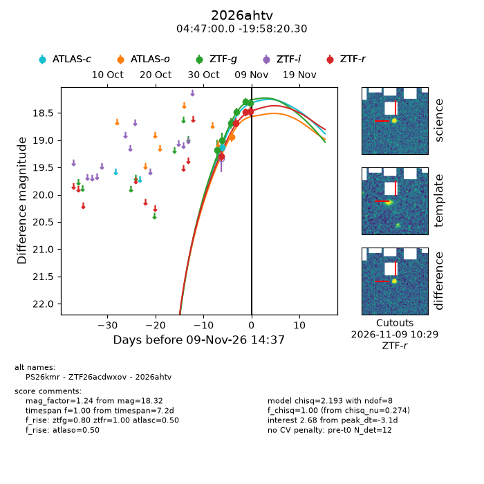
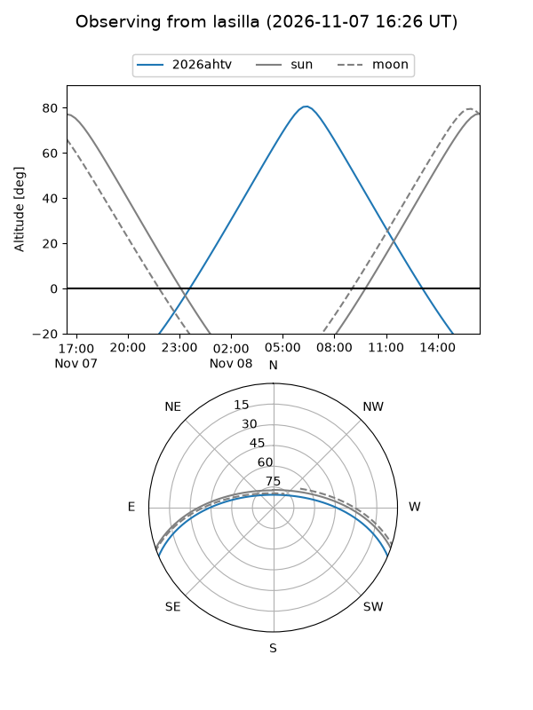
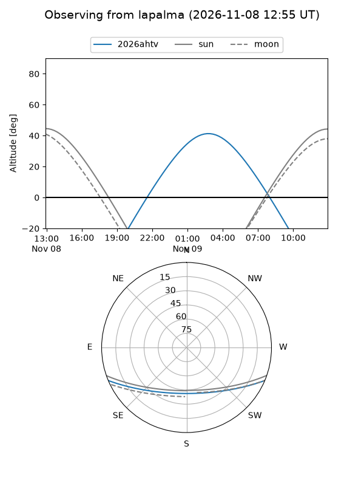
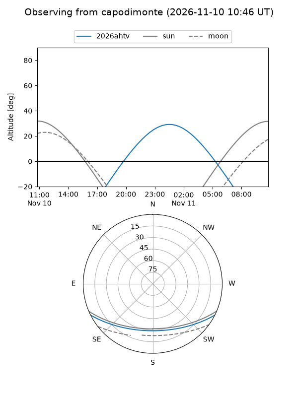
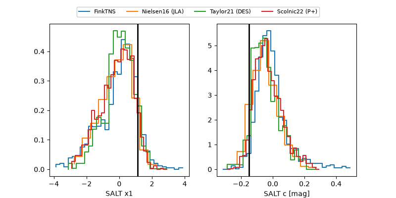

2026ahtv
Target 2026ahtv at 2026-11-09 14:39
Aliases and brokers:
FINK-ZTF: ztf.fink-portal.org/ZTF26acdwxov
Lasair-ZTF: lasair-ztf.lsst.ac.uk/objects/ZTF26acdwxov
ALeRCE-ZTF: alerce.online/object/ZTF26acdwxov
YSE-PZ: ziggy.ucolick.org/yse/transient_detail/2026ahtv
TNS name: wis-tns.org/object/2026ahtv
Direct TNS query: direct search
alt names
ZTF26acdwxov (ztf,fink_ztf)
2026ahtv (tns,yse)
PS26kmr (panstarrs)
Coordinates:
equatorial (ra, dec) = 71.7501,-19.97231
equatorial (HMS+DMS) = 04:47:00.03,-19:58:20.30
galactic (l, b) = (218.7902,-36.00997)
Flags:
peak dt: -3.1
Photometry:
last atlasc=19.13, atlaso=18.94, ztfg=18.32, ztfr=18.48
1 atlasc, 1 atlaso, 6 ztfg, 4 ztfr detections
Lightcurve

Visibility



Additional plots
